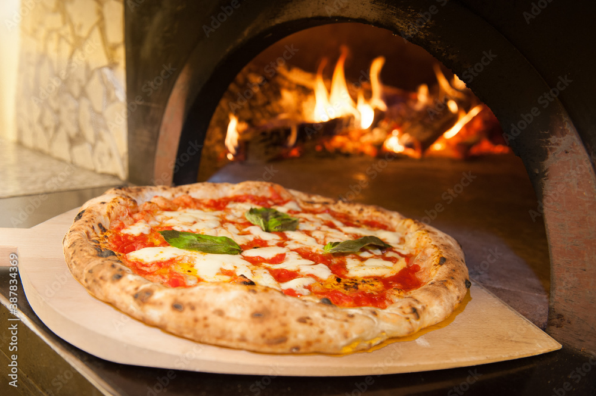

Lasagna alla Bolognese

The classic Pizza Margherita is arguably the most iconic Neapolitan-style pizza: crisp, slightly chewy crust, topped simply with tomato sauce, fresh mozzarella (or Fior di Latte), fresh basil leaves and extra-virgin olive oil. The colours (red tomato, white cheese, green basil) reflect the Italian flag.
Ingredients (makes 1 personal-size pizza, ~30 cm / 12″)
- Pizza dough ball: ~250—300 g (prepared ahead or store-bought good dough)
- ~120 g canned whole peeled San Marzano tomatoes, hand-crushed (or good quality tomato purée)
- Pinch of fine sea salt
- ~100 g fresh mozzarella (buffalo mozzarella or fresh cow-milk Fior di Latte), drained & torn/sliced
- 3—4 fresh basil leaves
- 1 Tbsp extra-virgin olive oil
- (Optional) a light sprinkle of grated Parmigiano or Pecorino
Steps and Method
- Pre-heat your oven with a pizza stone or steel in the middle rack to its highest setting (≈250-280 °C / 480-540 °F) for at least 30-45 min.
- Stretch/shape the dough: On a lightly floured surface (fine semolina optional), flatten and stretch the dough from the centre outward to form a disc ~30 cm diameter, leaving a slightly thicker rim (cornicione).
- Spread hand-crushed tomatoes onto the base, leaving the rim clear. Season with a pinch of salt.
- Distribute the mozzarella slices over the tomato.
- Drizzle with olive oil (and optionally sprinkle a little grated cheese) and add basil either before or after baking.
- Slide the pizza onto the hot stone/steel and bake for ~7-10 minutes (or until the crust is puffed, slightly charred at edges, cheese melted and bubbling).
- Remove from oven, add a few fresh basil leaves (if you didn’t before), drizzle with a little more olive oil, slice and serve immediately.
Important Notes
- Use high-heat oven or pizza stone/steel to get the right crust.
- Use fresh, good-quality ingredients (tomatoes, mozzarella, olive oil) — the simplicity means each component must shine.
- Drain the mozzarella well so excess moisture doesn’t make the crust soggy.
- Work quickly once dough is shaped to preserve the airiness and rise.
Recommendations to Serve With
- A crisp green salad with lemon-olive oil dressing.
- A light Italian beer or a chilled dry white wine (e.g., Pinot Grigio) or sparkling water.
- Freshly cracked black pepper or chilli flakes on the side for those who like heat.
Conclusion
Pizza Margherita brings authenticity (Neapolitan roots), flavourfulness through premium simple ingredients, and simplicity in its straightforward method. It’s the perfect canvas dish—simple in concept, satisfying in result.
Check out for other dishes...